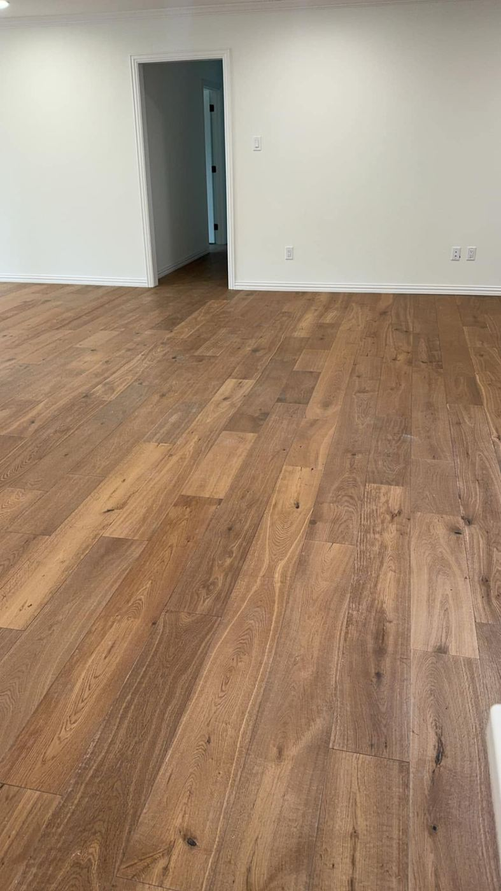
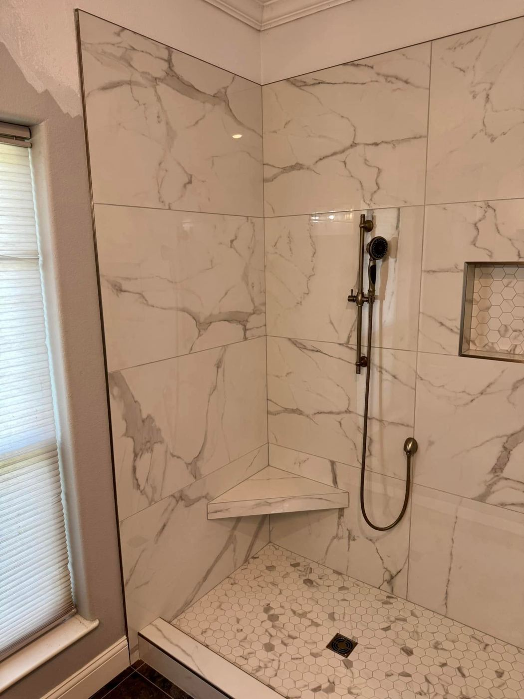
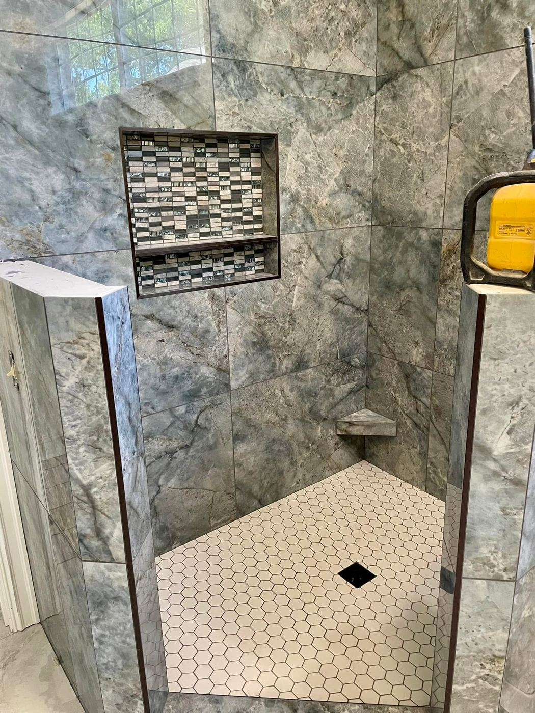

★★★★★
“Absolutely awesome people! Easy to work with and they do excellent work.”
Perry's Hometown Flooring is your local retailer and installation specialist for all types of flooring, best known in the Ark-La-Tex for custom showers and quality workmanship.
Hometown Flooring features tile, stone, granite, hardwood, carpet, vinyl and VCT for residential and commercial projects. Come see the showroom on S Washington Ave, or call for a free estimate.


Tile and natural stone for floors, walls, entries and backsplashes.
Learn more →
The work we are best known for across the Ark-La-Tex: custom tiled showers built with care.
Learn more →
Hardwood flooring installed by a crew trained in Bona hardwood products.
Learn more →
Soft, comfortable carpet for bedrooms, living rooms and offices.
Learn more →
Durable vinyl plank flooring with the look of wood.
Learn more →
Granite countertops for kitchens, islands and vanities.
Learn more →
Commercial flooring including VCT for offices, halls and public spaces.
Learn more →

Across the Ark-La-Tex, Perry's is best known for custom showers. From accessible walk-in showers to tiled niches and tub surrounds, the same crew handles the tile, the floor and the finish.

Perry's Hometown Flooring was named Hometown Best 2025 by Celebrate Marshall.
“Absolutely awesome people! Easy to work with and they do excellent work.”
“Great job on a new accessible shower and flooring.”
“These guys got in got out and my granite looks great! Showed up when they said they were and did a great job!”
“Very professional; did an excellent job on my mothers bathroom and shower. Would recommend these guys anyday.”
“BEST IN TOWN”
Call us or stop by the showroom at 2909 S Washington Ave in Marshall.